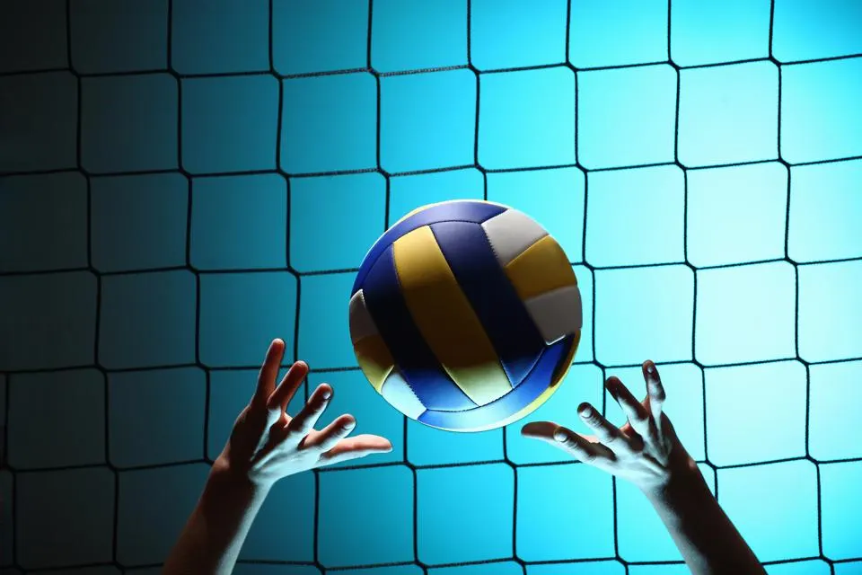
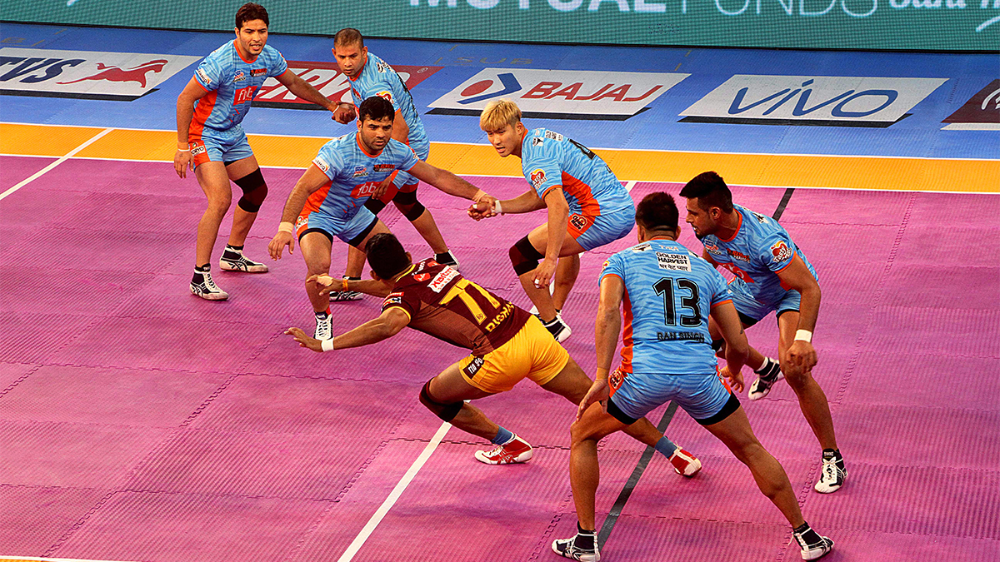

GAMES
Indoor Games :
Chess
Chess is a board game for two players. It is sometimes called
international chess or Western chess to distinguish it from related games
such as xiangqi (Chinese chess) and shogi (Japanese chess). Chess is an
abstract strategy game that involves no hidden information and no elements
of chance.
It is played on a chessboard with 64 squares arranged in an 8×8 grid. The
players, referred to as "White" and "Black", each control sixteen pieces:
one king, one queen, two rooks, two bishops, two knights, and eight pawns.
White moves first, followed by Black.
The game is won by checkmating the opponent's king, i.e. threatening it
with inescapable capture. There are several ways a game can end in a draw.
Carrom
Carrom is a tabletop game of Indian origin in which players flick discs, attempting to knock them to the corners of the board. In South Asia, many clubs and cafés hold regular tournaments.
Carrom is commonly played by families, including children, and at social functions. Different standards and rules exist in different areas.
The word carrom means to strike and rebound.
Ludo
Ludo (from Latin ludo) is a strategy board game for two to four players, in which the players race their four tokens from start to finish according to the rolls of a single die. Like other cross and circle games, Ludo is derived from the Indian game Pachisi.
The game and its variations are popular in many countries and under various names.
Snakes and Ladders
Snakes and ladders is a board game for two or more players regarded today as a worldwide classic. The game originated in ancient India as Moksha Patam, and was brought to the United Kingdom in the 1890s. It is played on a game board with numbered, gridded squares.
A number of "ladders" and "snakes" are pictured on the board, each connecting two specific board squares. The object of the game is to navigate one's game piece, according to die rolls, from the start (bottom square) to the finish (top square), helped by climbing ladders but hindered by falling down snakes.
Uno Cards
Uno stylized as UNO, is a proprietary American shedding-type card game originally developed in 1971 by Merle Robbins in Reading, Ohio, a suburb of Cincinnati, that housed International Games Inc., a gaming company acquired by Mattel on January 23, 1992.
Played with a specially printed deck, the game is derived from the crazy eights family of card games which, in turn, is based on the traditional German game of mau-mau.
Outdoor Games :
Cricket

Cricket is a bat-and-ball game that is played between two teams of eleven players on a field, at the centre of which is a 22-yard (20-metre) pitch with a wicket at each end, each comprising two bails balanced on three stumps. Two players from the batting team (the striker and nonstriker) stand in front of either wicket holding bats, with one player from the fielding team (the bowler) bowling the ball towards the striker's wicket from the opposite end of the pitch. The striker's goal is to hit the bowled ball with the bat and then switch places with the nonstriker, with the batting team scoring one run for each exchange. Runs are also scored when the ball reaches or crosses the boundary of the field or when the ball is bowled illegally.
The fielding team tries to prevent runs from being scored by dismissing batters (so they are "out"). Means of dismissal include being bowled, when the ball hits the striker's wicket and dislodges the bails, and by the fielding side either catching the ball after it is hit by the bat but before it hits the ground or hitting a wicket with the ball before a batter can cross the crease in front of the wicket. When ten batters have been dismissed, the innings ends and the teams swap roles. Forms of cricket range from Twenty20 (also known as T20), with each team batting for a single innings of 20 overs (each "over" being a set of 6 fair opportunities for the batting team to score) and the game generally lasting three to four hours, to Test matches played over five days.
Badminton

Badminton is a racquet sport played using racquets to hit a shuttlecock across a net. Although it may be played with larger teams, the most common forms of the game are "singles" (with one player per side) and "doubles" (with two players per side). Badminton is often played as a casual outdoor activity in a yard or on a beach; formal games are played on a rectangular indoor court. Points are scored by striking the shuttlecock with the racquet and landing it within the other team's half of the court.
Each side may only strike the shuttlecock once before it passes over the net. Play ends once the shuttlecock has struck the floor or ground, or if a fault has been called by the umpire, service judge, or (in their absence) the opposing side.
Volley Ball

Volleyball is a team sport in which two teams of six players are separated by a net. Each team tries to score points by grounding a ball on the other team's court under organized rules.[1] It has been a part of the official program of the Summer Olympic Games since Tokyo 1964. Beach volleyball was introduced to the programme at the Atlanta 1996 Summer Olympics. The adapted version of volleyball at the Summer Paralympic Games is sitting volleyball.
The ball is usually played with the hands or arms, but players can legally strike or push (short contact) the ball with any part of the body. A number of consistent techniques have evolved in volleyball, including spiking and blocking (because these plays are made above the top of the net, the vertical jump is an athletic skill emphasized in the sport) as well as passing, setting, specialized player positions, and offensive and defensive structures
Football

Football is a family of team sports that involve, to varying degrees, kicking a ball to score a goal. Unqualified, the word football generally means the form of football that is the most popular where the word is used. Sports commonly called football include association football (known as soccer in Australia, Canada, South Africa, the United States, and sometimes in Ireland and New Zealand); Australian rules football; Gaelic football; gridiron football (specifically American football, arena football, or Canadian football); International rules football; rugby league football; and rugby union football.[1] These various forms of football share, to varying degrees, common origins and are known as "football codes".
Kabaddi

Kabaddi is a contact team sport played between two teams of seven players, originating in ancient India.[4] The objective of the game is for a single player on offence, referred to as a "raider", to run into the opposing team's half of the court, touch out as many of their players as possible, and return to their own half of the court, all without being tackled by the defenders in 30 seconds. Points are scored for each player tagged by the raider, while the opposing team earns a point for stopping the raider. Players are taken out of the game if they are touched or tackled, but return to the game after each point scored by their team from a tag or tackle.